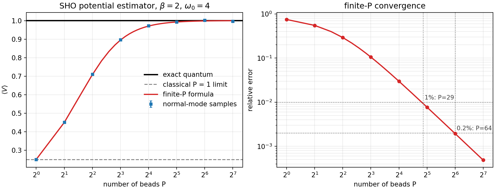

PIMD Series - Part I
Ring-Polymer Basics
Path-integral molecular dynamics turns an equilibrium quantum Boltzmann problem into a classical sampling problem over a ring polymer. This first note keeps the scope deliberately static: it derives the ring-polymer Hamiltonian, writes the sampling equations of motion, and tests the bead-number convergence of a harmonic-oscillator potential estimator.
Quantum Boltzmann trace
For a one-dimensional Hamiltonian
the canonical partition function is
The path-integral construction applies the Trotter factorization with \(P\) imaginary-time slices, \(\beta_P=\beta/P\), and closes the path by setting \(q_{P+1}=q_1\). Integrating out the short-time momentum kernels gives
The quantum particle is therefore represented by \(P\) classical beads connected by harmonic springs. Increasing \(P\) resolves shorter imaginary-time structure, but also introduces high-frequency internal modes.
Ring-polymer Hamiltonian
To sample the configurational distribution with molecular dynamics, fictitious bead momenta are introduced:
The mass \(m'\) and the MD time are sampling devices; they do not define the real-time quantum motion. The corresponding sampling equations are
In practice these equations are usually combined with thermostats, because the free ring-polymer modes are stiff and can be poorly ergodic. Part II focuses on that NVT layer.
Normal modes
The spring matrix is diagonal in ring-polymer normal modes. For the free ring polymer, the mode frequencies are
The \(k=0\) mode is the centroid. The remaining modes describe internal imaginary-time fluctuations. Splitting algorithms exploit this diagonal form by treating the free ring-polymer substep analytically or with a stable approximation.
Normal-mode EOM workflow
A practical PIMD trajectory usually does not integrate the stiff spring force directly in bead coordinates. One standard second-order step splits the physical potential from the free ring-polymer Hamiltonian:
- Apply a half kick in bead coordinates, \(p_j\leftarrow p_j-\frac{\Delta t}{2}\partial V(q_j)/\partial q_j\).
- Transform bead positions and momenta to normal modes, \(Q=Cq\) and \(P=Cp\), using an orthogonal ring-polymer transform.
- Propagate each free normal mode analytically. For \(\omega_k\ne0\),
For the centroid mode, where \(\omega_k=0\), this reduces to the free drift \(Q_0\leftarrow Q_0+\Delta t\,P_0/m'\). The step is completed by transforming back to bead coordinates, applying the second half kick, and then applying the chosen thermostat step for NVT sampling. This is the normal-mode workflow behind the sampling equations; the benchmark below uses the same normal-mode structure but evaluates the harmonic equilibrium covariance directly, so it has no timestep error.
Static estimators
For a position-only observable \(O(q)\), the standard bead estimator is
For a harmonic oscillator \(V(q)=m\omega_0^2q^2/2\), the exact quantum potential energy is
The finite-\(P\) ring-polymer result can also be evaluated directly in normal modes:
Workflow
- Set \(m=\hbar=1\), \(\beta=2\), and \(\omega_0=4\).
- Compute the ring-polymer mode frequencies and the exact quantum value of \(\langle V\rangle\).
- Evaluate the finite-\(P\) normal-mode formula for \(P=1,\ldots,128\).
- Draw independent normal-mode Gaussian samples from the finite-\(P\) equilibrium distribution at powers of two.
- Scan all integer \(P\) values to estimate how many beads are needed for preset relative-error tolerances.
- Compare the estimator against the exact quantum value and the classical \(P=1\) limit.
Result
For this low-temperature oscillator, \(\beta\hbar\omega_0=8\), the exact finite-\(P\) formula gives a useful bead-count rule of thumb: the first integer \(P\) below 1% relative error is \(P=29\), the first below 0.2% is \(P=64\), and the first below 0.1% is \(P=90\). If only powers of two are used, this means \(P=32\), \(64\), and \(128\), respectively.

Code used in this note
- pimd_sho_benchmark.py computes the finite-\(P\) formula, draws normal-mode samples, writes the figure, and saves the numerical table.
- pimd-sho-benchmark.csv stores the finite-\(P\), sampled, and relative-error values.
- pimd-sho-convergence-thresholds.csv stores the first integer \(P\) reaching each analytic relative-error tolerance.
References
- Feynman and Hibbs, Quantum Mechanics and Path Integrals.
- Tuckerman, Berne, Martyna, and Klein, J. Chem. Phys. 99, 2796 (1993).
- Ceriotti, Parrinello, Markland, and Manolopoulos, J. Chem. Phys. 133, 124104 (2010).